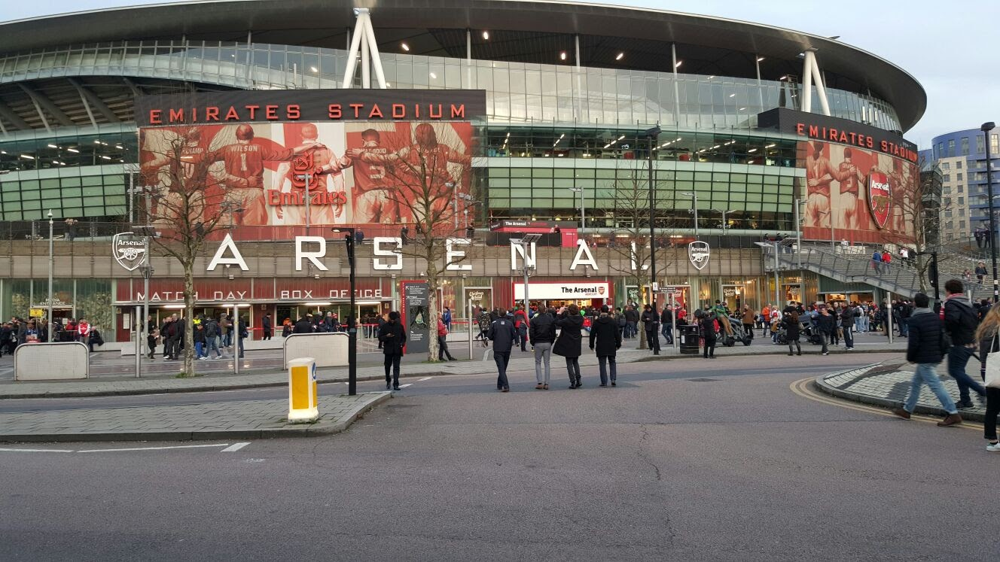

Arsenal by the Numbers
This interactive dashboard comes from Tableau Public. Hover over or click the charts to explore the data.

Welcome to my page about Arsenal, the soccer club my family has supported for generations. Soccer is more than just a sport for me, and Arsenal is a big part of why. On this page you can read about the club, see why I support them, and check out a few of the things that make them special.

Arsenal was founded in 1886 and is based in London. The team plays its home games at the Emirates Stadium, and fans know the club as the Gunners. Today the team is managed by Mikel Arteta, who has spent several years building the squad into one of the best in England.
Last season was a huge one. Arsenal won the 2025/26 Premier League title, the club's first league championship in 22 years. That win ended a stretch where the team finished second three seasons in a row, so it felt like the hard work had finally paid off. It was also a big moment for the club's history, since it brought Arsenal's total to 14 league titles in the top division of English soccer.
The team's defense was a major reason for the success. Arsenal gave up fewer goals than any other team in the league, and goalkeeper David Raya won the Golden Glove award. Before this season, the last time Arsenal won the league was 2003/04, the famous "Invincibles" season when the team went the entire year without losing a single game. Fans waited a long time to see a title again, and seeing it happen after all those near misses made it even more special.
This video from the Premier League shows the moment Arsenal's 22-year wait for a league title came to an end.
This interactive dashboard comes from Tableau Public. Hover over or click the charts to explore the data.
Supporting Arsenal means something different to me than just cheering for a team. It's something I share with my family, and every big win, tough loss, and long wait is a memory we all share together.